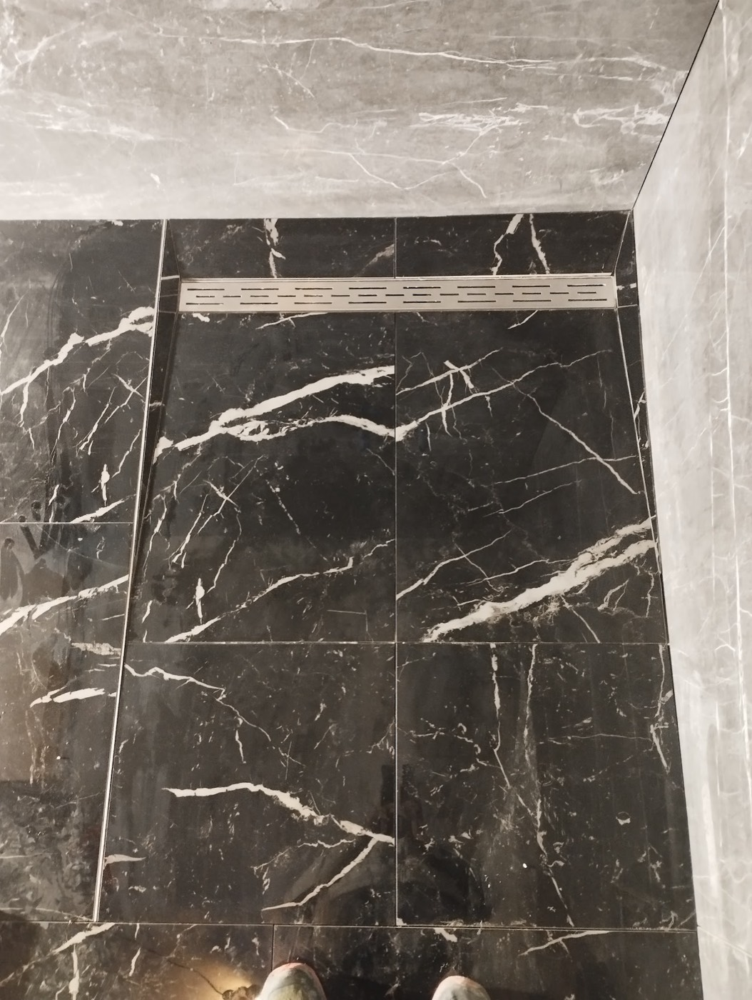
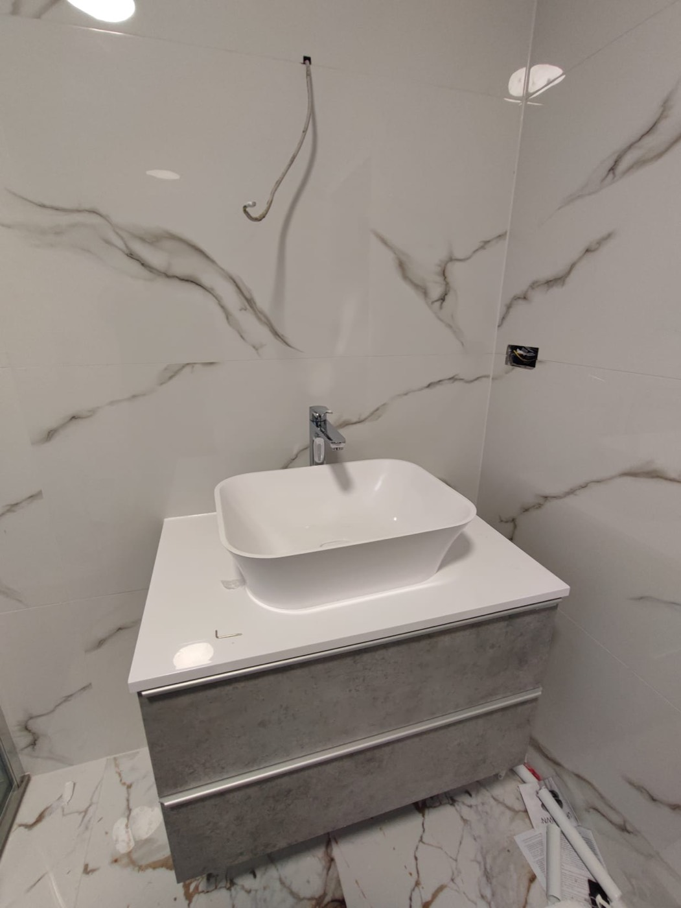
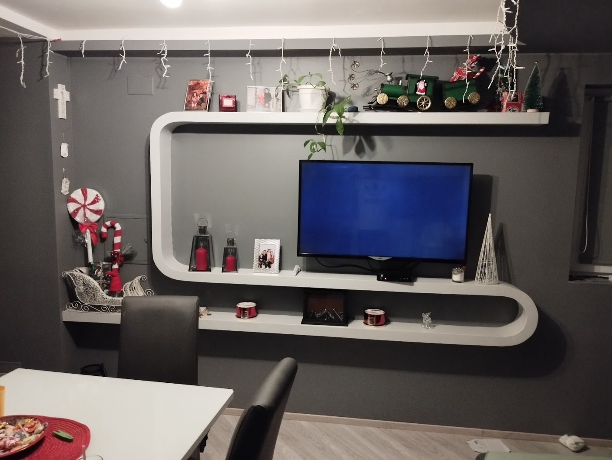
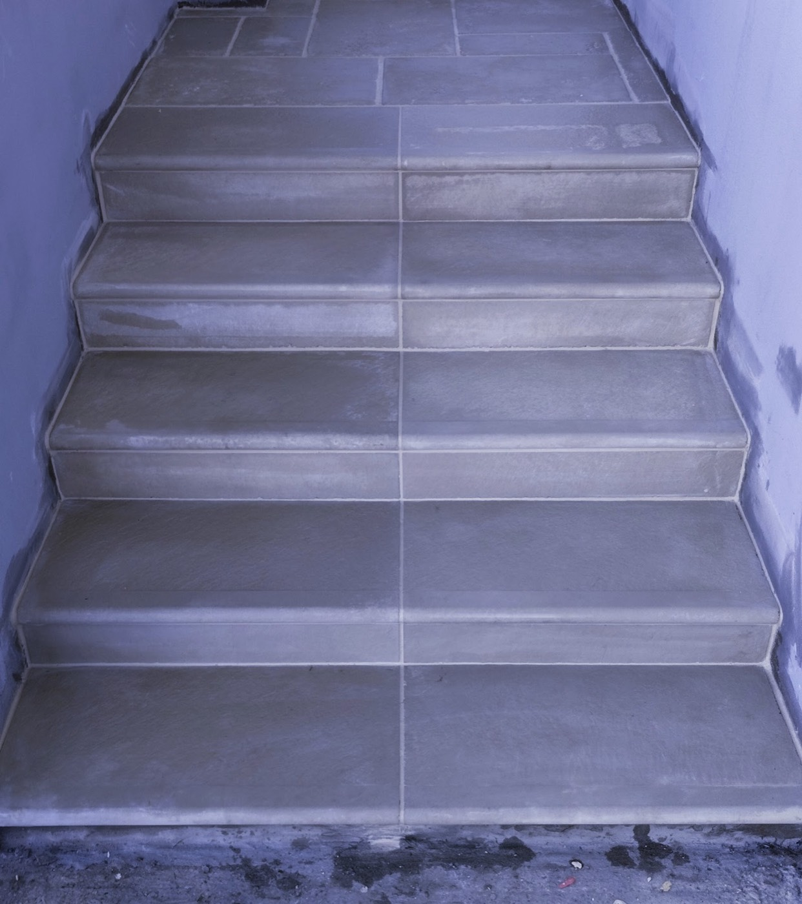
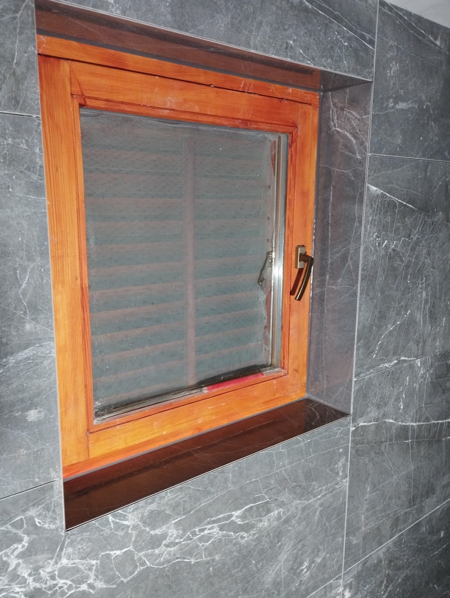
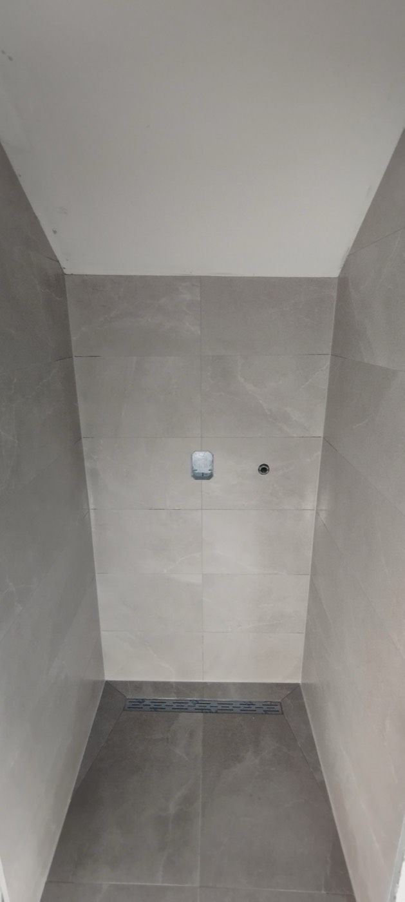
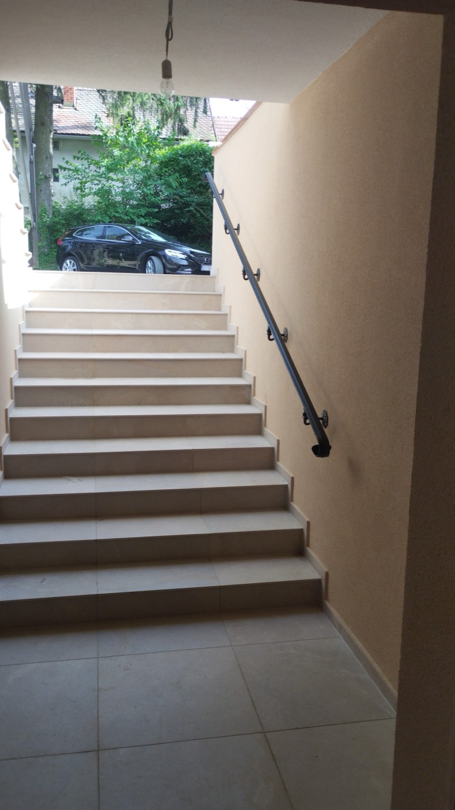
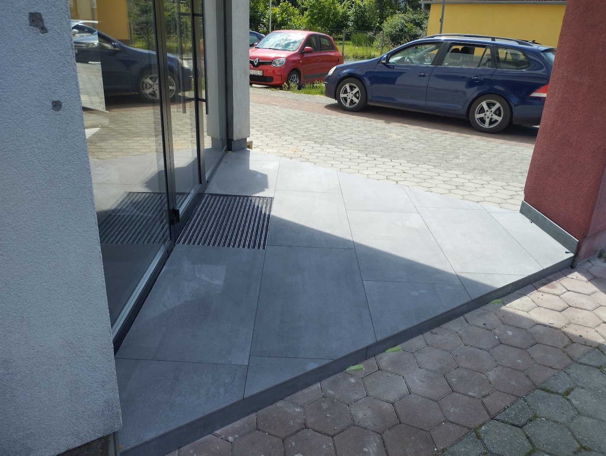
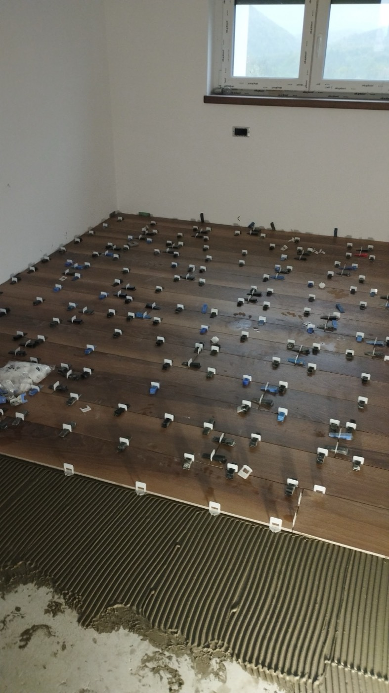

Keramičarski radovi
Zidne i podne pločice, uključujući velike formate, s niveliranjem ravnine i urednim fugama.
S INTERIOR je uslužni obrt Luke Sabolića iz Gornjeg Knegineca kraj Varaždina. Postavljamo zidne i podne obloge, adaptiramo kupaonice i stanove, radimo knauf, podne obloge, klesarske radove i uređenje okućnice.

Zidne i podne pločice, uključujući velike formate, s niveliranjem ravnine i urednim fugama.
Od skidanja starih pločica do gotove kupaonice: tuš s linijskim odvodom, obloge, umivaonik.
Obnova prostora od zida do poda – pločice, knauf i podne obloge na jednom mjestu.
Pregradni zidovi, spušteni stropovi, obloge zidova i ugradbeni elementi od gips-ploča.
Postavljanje podnih obloga u stanovima, kućama i poslovnim prostorima.
Obrada i postavljanje kamena i kamenih obloga.
Vanjski radovi oko kuće – stube, ulazi i ostali dijelovi okućnice.
Nazovite 091 621 5076 i opišite što treba.







091 621 5076, radnim danom od 8 do 16 sati.
Što se radi, okvirna kvadratura i fotografija – tako je razgovor kraći.
Vrsta radova, materijal i termin dogovaraju se izravno, telefonom.

Odlično odrađen posao, pedantno i uredno. Sve preporuke.★★★★★ Višnja Š. · Google
Profesionalni su i susretljivi. Vrlo pristojni vlasnici, sve najbolje.★★★★★ Natali V. · Google
Vrh!★★★★★ Vinko K. · Google
Recenzije su prenesene s Google profila obrta (stanje 19. 11. 2026.). Pročitajte sve na Googleu.
Keramičarske radove (zidne i podne pločice), adaptacije kupaonica i stanova, suhu gradnju (knauf), podne obloge, klesarstvo i uređenje okućnice. Registrirana djelatnost obrta je postavljanje podnih i zidnih obloga.
Nazovite 091 621 5076 ili pošaljite SMS s kratkim opisom radova, okvirnom kvadraturom i, ako možete, fotografijom prostora. Obrazac na ovoj stranici složit će takvu poruku umjesto vas.
Od ponedjeljka do petka od 8 do 16 sati. Subotom i nedjeljom obrt ne radi.
Sjedište obrta je na adresi Školska ulica 20 A, 42204 Gornji Kneginec, nekoliko kilometara južno od Varaždina.
Da. S INTERIOR je uslužni obrt vlasnika Luke Sabolića, osnovan 2023. godine, s registriranom djelatnošću postavljanja podnih i zidnih obloga.
Najbrže je telefonom ili SMS-om. Za ponudu pomaže kratak opis radova, okvirna kvadratura i fotografija prostora.
Uslužni obrt, vl. Luka Sabolić
| Ponedjeljak – petak | 8:00 – 16:00 |
| Subota | zatvoreno |
| Nedjelja | zatvoreno |
Ispunite par polja – poruka se složi sama.